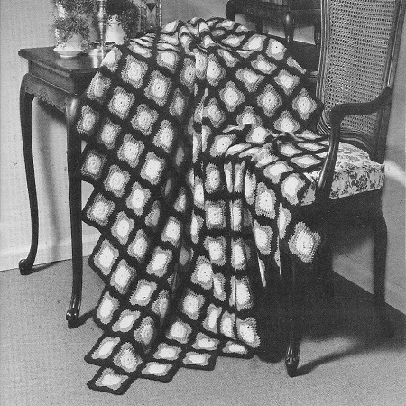
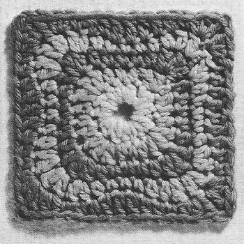
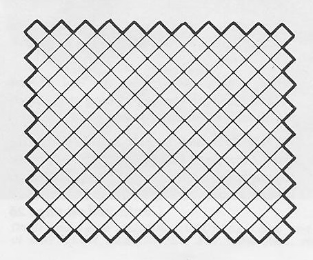

Shaded Squares Afghan Pattern
The Shaded Squares Afghan is a crochet pattern that creates a beautiful and textured blanket composed of individual squares. Each square typically features a combination of different stitches and color changes, resulting in a gradient or shaded effect across the afghan.
MATERIALS:
COATS & CLARK'S RED HEART® KNITTING WORSTED, 4 Ply ("Tangle-Proof" Pull-Out Skeins): 8 ounces of No. 722 Lt. Pink, 12 ounces of No. 737 Pink, 12 ounces of No. 789 Bitter-sweet, 16 ounces of No. 758 Mid Rose and 28 ounces of No. 760 Wine Rose. Crochet Hook, Size H.
Afghan measures 45 x 63 inches—Motif measures 4.5 inches square.
Always be sure to check your gauge before starting afghan.
Use any size hook which will obtain the motif measurement above.
MOTIF: (Make 179) Starting at center with Lt. Pink, ch 6. Join with sl st to form ring.
1st rnd: Ch 3, in ring make (hdc, sc, hdc and dc) 3 times; hdc, sc and hdc. Join with sl st to top of ch-3. Break off and fasten.
Attach Pink to joining of previous rnd.
2nd rnd: With Pink ch 3, make 2 dc in same place where yarn was attached, (hdc in next hdc, sc in next sc, hdc in next hdc, 3 dc in next dc) 3 ,times; hdc in next hdc, sc in next sc, hdc in next hdc. Join as before. Break off and fasten.
Attach Bittersweet to first dc following the joining.
3rd rnd: With Bittersweet ch 3, make 2 dc in game place where yarn was attached, (hdc in next dc, sc in each of next 3 sts, hdc in next dc, 3 dc in next dc) 3 times; hdc in next dc, sc in each of next 3 sts, hdc in joining of previous rnd. Join.
Break off and fasten.
Attach Mid Rose to first dc following the joining.
4th rnd: With Mid Rose ch 3, dc in same place where yarn was attached, (in next dc make dc and hdc; hdc in next hdc, sc in each of next 3 sc, hdc in next hdc, in next dc make hdc and dc; 2 dc in next dc) 3 times; in next dc make dc and hdc; hdc in next hdc, sc in each of next 3 sc, hdc in next hdc, in joining of previous rnd make hdc and dc. Join.
Break off and fasten.
Attach Wine Rose to joining.
5th rnd: With Wine Rose ch 2, in same place where yarn was attached make hdc and dc; ch 1 for corner, in next dc make dc and 2 hdc; (sc in next dc, hdc in each of next 2 hdc, dc in each of next 3 sc, hdc in each of next 2 hdc, sc in next dc, in next dc make 2 hdc and dc; ch 1 for corner, in next dc make dc and 2 hdc) 3 times; sc in next dc, hdc in each of next 2 hdc, dc in each of next 3 sc, hdc in each of next 2 hdc, sc in next dc. Join to top of ch-2.
Break off and fasten.
Block Motifs to measurements. Arranging Motifs as shown on diagram below, sew motifs neatly together.
EDGING: With right side facing, attach Wine Rose to the first free ch-1 sp on any corner motif; in same sp make sc, ch 1 and sc; * sc in each of next 15 sts, ** in next ch-1 sp make sc, ch 1 and sc-2 sts increased; sc in each of next 15 sts, draw up a loop in next ch-1 sp on same motif, draw up a loop in adjacent ch-1 sp on next motif, yarn over and draw through all loops on hook-1 sc decreased; sc in each of next 15 sts. Repeat from ** across to within first free ch-1 sp on next corner motif, inc 2 sc in next ch-1 sp. Repeat from * around, ending with sc in last 15 sts. Join with sl st to first sc.
Break off and fasten.

HOME